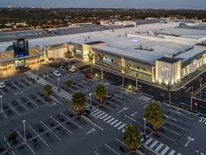

ABOUT US
ENJOY SHOPPING WITH A LOT MORE FUN!
Pine City Mall is an exclusive and upmarket shopping destination conveniently situated in Coege in Port Elizabeth, this luxurious centre offers shoppers in excess of 43 000m² of retail floor space and over 150 stores comprising a number of top national and international retail brand.
Pine city Mall’s range of coffee shops, restaurants and speciality stores offer a decadent variety of delicacies that will tempt any palette- whether it be for business or pleasure. All your banking, travel and foreign exchange needs can be met in the Centre, which houses all of South Africa’s major banks, accompanying ATM’s as well as top class travel agencies.

The Centre continues to attract LSM 7-10 + shoppers from its primary and secondary catchment areas.
With ample, secure, free on-grade parking conveniently located close to our five entrances to the shopping centre, as well as paid for parking in our underground parking garage provides visitors the convenience of shopping comfortably during rain, hail or snow! Our underground parking garage also provides you with a fantastic ‘Wash-e-Moto’ car wash service, while you shop.
The Centre’s exclusively and unique shopping experience offers you the “very best” in retail.
PARKING
The Shopping Centre offers its customers over 1 164 conveniently located parking bays, of which 731 bays are located in a safe, secure basement parking garage, from which the mall can be accessed from various conveniently located lifts and stair cases. The parking garage is open daily from 07h00 to 20h00.
SECURITY
The Shopping Centre, the safety of our tenants and clients is a major priority. The on-site services at Walmer Park are provided by Phangela Group and the armed response services are provided by Atlas Security. The shopping centre has 24 hour on-site security personnel and CCTV cameras located through the shopping centre and car parks.
Contact Details
Security Control Room
041 368 6001
CLEANING
The Shopping Centre strives to provide a clean, bright and fresh shopping environment for shoppers to enjoy while they shop. The cleaning services at Walmer Park Shopping Centre are provide by Supercare Cleaning.